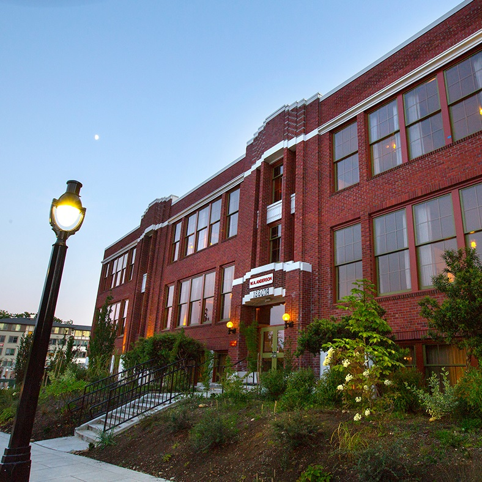

The top 3 things to do in Bothell, Washington

"Murder" at UW Bothell
Watch the crows gather in droves at the campus of UW Bothell/Cascadia in the Autumn months. The college has gone to great lengths to make their campus friendly to local wildlife and the birds love to roost here.

Sammamish River Trail
Take a walk or ride a bike on this trail along the Sammamish River. Ranging from city one to city two, there is a lot of distance to travel and enjoy including stops at several parks along the way.

The Anderson School
A unique stay with its historic school-turned-hotel, complete with a brewery, restaurants, and a pool. Guests can enjoy a vibrant atmosphere, live music, and close proximity to local attractions.